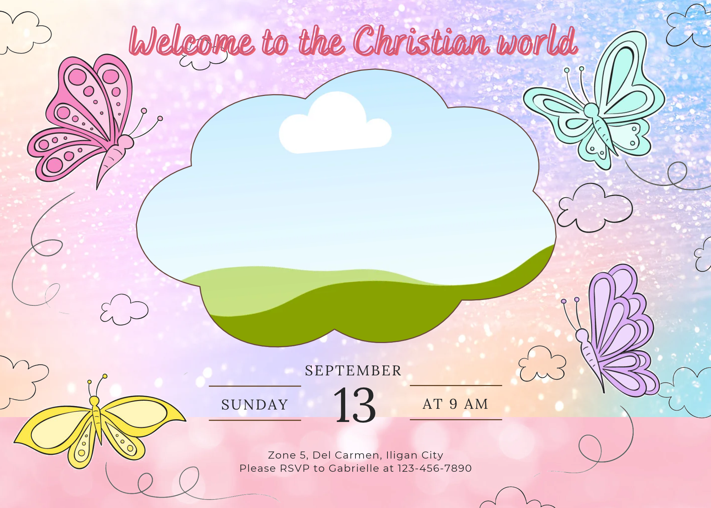
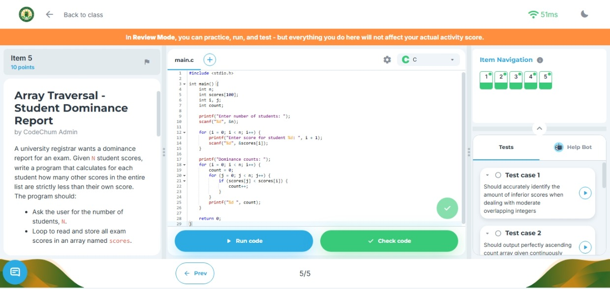
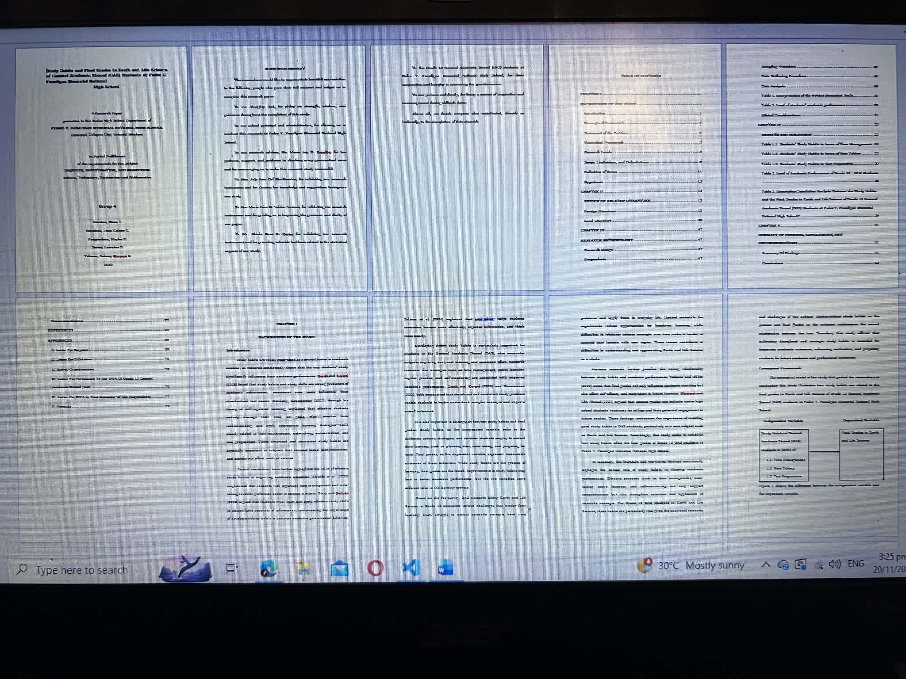
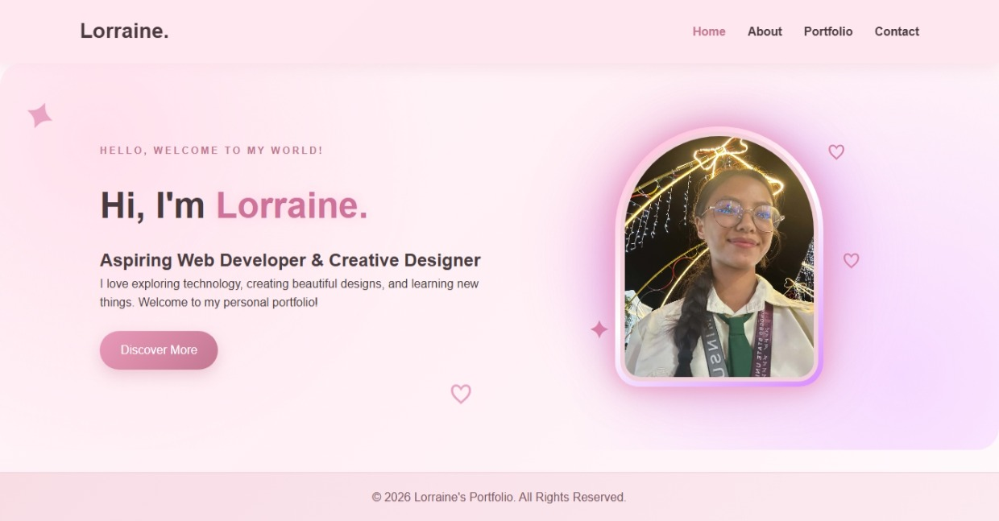

My Projects
Welcome to my portfolio! Here are some of my academic activities, creative works, and computer projects that showcase my skills, interests, and continuous learning.

Graphic Design
Creative posters, layouts, and infographics created using Canva. This project showcases my creativity and ability to communicate ideas through visual designs.

Computer Programming
Basic programming activities using C language. Through these activities, I learned about variables, conditional statements, loops, and solving problems through coding.

Academic Research
A school research project that helped me develop my skills in gathering information, analyzing data, organizing ideas, and presenting research findings.

Web Development
My personal online portfolio created using HTML and CSS. This project demonstrates my understanding of website structure, styling, navigation, and basic web design.